致云云管理平台技术特点¶
概述¶
致云云管理平台是致云科技为了提供高效、简洁的云计算服务而完全自主设计研发的纯软件IaaS平台。
与目前主流的开源云计算产品不同，整套产品采用 极简理念 设计，在充分满足客户需求的前提下，简化系统概念，精简部署过程和使用流程，极大地降低了学习难度，缩短了系统和业务上线时间。
平台使用崭新且友好的Html5纯图形化界面进行管理和控制，提供无人值守图形化安装，用户无需学习繁琐的CLI指令和各种模块安装部署指南。
平台的分布式 Scale-out 架构，能够灵活部署应对从 All In One 最小系统到多地多中心的 公有云运营 等各种业务场景，所有平台组件能够自动发现、自动组网，在部署和迁移时，无需人工干预和管理，极大地提高项目实施效率，降低了维护难度和故障率。
全平台核心组件均为 C++ 开发，最大程度地发挥系统性能，同时杜绝了常见开源组件安全漏洞多，稳定性差的问题。
本产品设计目标为： 极简 极速 灵活 健壮 安全
本文档将阐述本产品为了达成上述设计目标，在产品和架构层面的具体设计细节与技术特点
完整产品架构、功能特性、使用说明 等内容不包含在本文档范围，请另行获取相关文档。
极简¶
一键部署¶
目前主流开源IaaS平台产品体系庞大，配置复杂，客户首先要根据需求进行咨询、选型和裁剪，再根据方案选择各组件供应商，实施部署时，必须考虑不同操作系统、依赖软件和各厂家组件兼容性谨慎选择部署版本，此外还需要部署不少外部开源组件才能真正获得可运行的云计算平台，从项目启动到实际上线动辄数月时间。
使用致云云管理平台，只需使用U盘、光盘或者BMC方式进行无人值守式的一键部署安装，就能快速将物理服务器从裸机集群升级为拥有完整功能特性的运营级云计算平台，将部署到上线时间缩短到数天以内。
部署完成后，客户可立刻通过简便而友好的Html5 Web界面进行系统配置和管理，无需学习任何繁琐CLI指令和命令行操作。系统不用额外安装第三方组件就可以直接获得包括统计报表、计费、运营支撑、状态监控、高可用、故障恢复等高级特性，无需担心系统兼容性、组件版本冲突等繁琐问题。
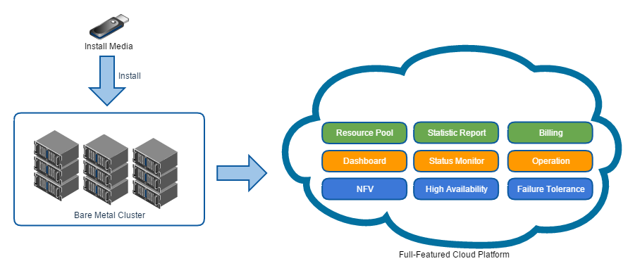一键创建¶
主流开源IaaS平台创建云主机时，需要用户逐步手动申请各种虚拟资源，再进行组装，获得最终的云主机。过程繁琐，技术要求偏高，智能化、自动化程度低，难以满足用户对于云服务快速部署、批量部署的需求。
致云云管理平台将计算资源、存储资源和网络资源封装为资源池，用户仅需要向资源池提交所需云主机的基本配置要求，即可一键创建并获得云主机，所有关联资源的选择、分配、组装由系统自动控制。
基于致云的计算资源池设计，用户可以实现快速和批量的云服务部署。同时，致云云管理平台允许用户在一个系统内创建多个计算资源池，不同的计算池允许设置不同的业务属性，不仅能够对不同业务类型实现物理资源隔离，也能实现业务特性的分离，支撑不同业务的快速批量部署。
当用户向资源池请求创建云主机时，系统会根据用户请求，分别从分配计算资源、存储资源、网络资源，并最终组装为一个云主机提供给用户，如下图所示：
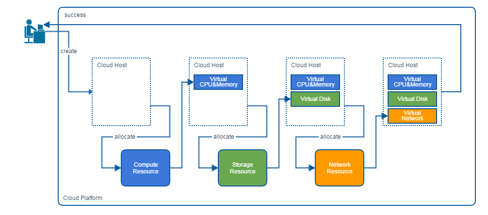当云主机创建过程中，某种类型资源不足或者其他原因，导致分配失败时，系统会自动回退并将已分配资源重新释放回资源池中，以便后续申请使用，防止出现资源泄漏，如下图所示：
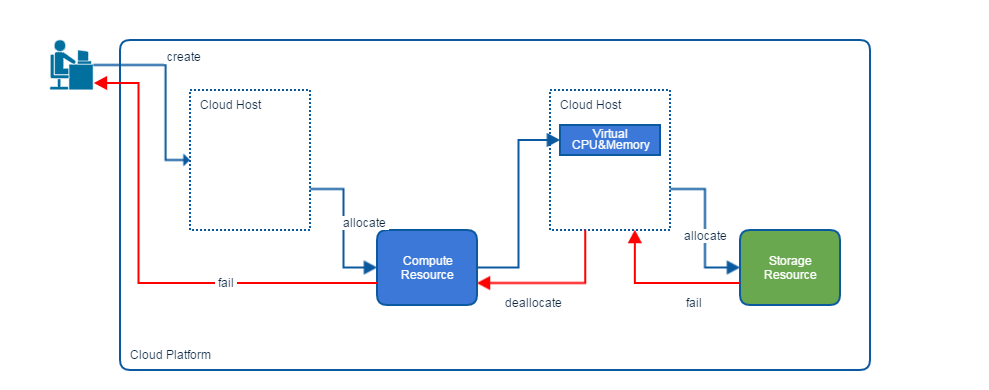全自动化的智能处理流程，能够最大程度简化用户操作，最大化系统资源利用率，同时降低故障率，保障系统可用性。
当系统内拥有多个资源池时，可以通过设置不同业务属性，来满足不同的服务快速批量部署需求。
比如，将两个计算资源池，一个设置为使用高可用共享存储，并配合独享IP地址，另一个设置为廉价的本地存储配合无外部IP的直连模式；对于VIP用户的云主机请求，指定第一个资源池，而对于普通用户的云主机请求指定使用第二个资源池，则可以保障VIP用户的云主机均获得高可用存储且有独立IP，而普通用户的云主机只有本地磁盘，且无外部网络接入，如下图所示：
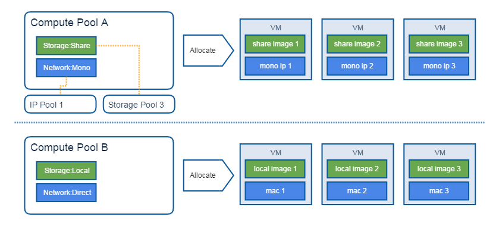全栈式服务¶
主流开源IaaS平台的计算、存储、网络各种资源由不同组件和服务器管理，并且使用各自的数据库系统存储，当需要进行控制决策和选择时，必须由多个不同的组件通讯交互、同步状态。这种设计下，一个简单的操作指令通常需要在多个组件传递并更新到多个数据库，整个执行链条冗长且低效，一旦某个环节出现通讯故障或者状态同步不及时，就会导致操作失败。
致云云管理平台由 Control Server 主控节点提供全栈式服务：
- Control Server 从全系统相关组件中实时采集计算资源、存储资源和网络资源状态，并统一进行管理。所有控制决策，直接在 Control Server 中根据系统最新状态实时计算和执行，无需冗长和低效的各种同步和交互过程，状态可靠，决策准确。
- Control Server 直接对所有执行单元组件进行控制，任何指令最多只需两个环节即可实际执行，保障了控制系统的最短路径到达。
- Control Server 掌控全系统状况，并对用户请求的整个过程进行全程管理和调度，当出现故障或者异常时，可以迅速根据系统整体状况进行重新调度或者回滚，最大程度保障请求有效执行。
Control Server 全栈式服务设计，确保云管理平台的所有指令都能够高效、可靠、迅速地执行，保障系统能够高速且可靠地持续运转。同时 Control Server 本身也提供集群部署模式，不会成为单一故障点。
虚拟化+¶
主流开源IaaS平台过度强调SDN/NFV重要性，要求客户部署云平台时，首先必须严格按照规则描述物理网络配置，再划分多种虚拟网络以匹配虚拟机管理需要。对于仅需要虚拟化主机的普通客户，这种模式不仅大量增加采购高价SDN设备的成本，还必须学习云平台的SDN/NFV规则和模式，同时管理虚拟网络、物理网络两套系统，极大地增加了学习成本和管理成本。
针对仅需要简单虚拟资源云化的客户，致云云管理平台提供了简单易学的 直连 模式。直连 模式资源池创建出的云主机，均拥有独立MAC地址，由宿主机物理网卡通过二层网络桥接接入客户原有网络环境，从网络视角来看，与原有物理主机完全相同 。整个云平台无缝接入企业已有网络，网络管理员可以通过传统网络的管理方式对云主机进行分配和管理，无需学习和管理两套独立系统，最大程度降低用户学习成本和使用难度。
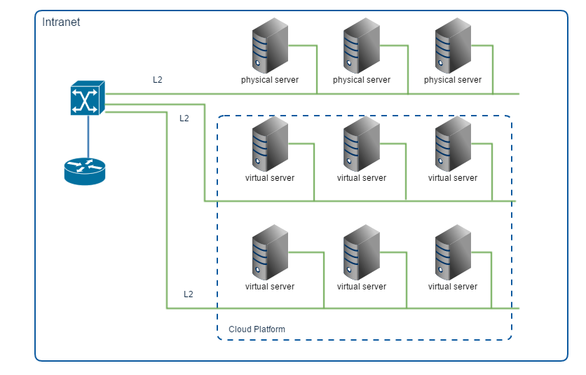极速¶
异步事务并发¶
IaaS平台内同时会有成千上万台云主机在运行，为了保障服务稳定性，系统会有非常多的监控和调度任务在后台执行，同时还要实时处理来自不同用户的大量服务请求。
云计算平台通常是多节点分布式部署在x86服务器上，任务请求通常需要分发到多个不同节点执行，但是容易因为网络故障或者延迟出现执行错误，导致请求失败，而且并发请求越多，故障率越高。如何保障大批量任务请求能够高效、可靠地正确执行，是云计算平台必须解决的核心技术问题之一。
为了解决这个问题，致云云管理平台设计了 异步事务 系统， 它的核心是 事务 和 事务会话。
事务
事务 定义了一个请求任务的处理流程规则，比如，创建云主机是一个 云主机创建事务 ， 删除云主机是一个 云主机删除事务， 每一个事务都有自己独立的处理逻辑和业务规则，事务已经预先由致云管理平台内置在系统中。
事务会话
事务会话 是 事务 的运行实例，它保存事务动作执行的当前状态、相关参数，根据 事务 定义的规则，进行状态跳转和业务处理。 事务会话 在平台收到业务请求时，根据 事务 类型创建，每个请求都有自己独立的 事务会话 管理状态。比如，平台同时受到两个用户的创建云主机请求，虽然都会根据 云主机创建事务 的规则执行，但是会分别拥有两个独立的 事务会话 管理各自的状态和处理流程，两个会话并行处理，互不影响。
它有以下特征：
- 所有事务会话均为异步并发处理，相互不干扰，不阻塞，最大程度发挥系统处理性能。
- 事务会话 的执行由消息驱动状态机控制，低延时，低资源消耗，专为分布式系统消息处理模式设计。
- 事务 为原子操作，要么成功执行，要么失败回滚，恢复到原始状态，不会因为中间步骤故障，产生资源泄漏等问题。
主流开源IaaS平台采用同步处理模式，一个请求处理成功再处理下一个请求，效率很低；致云云管理平台的异步模式，专为处理大批量并发请求设计，能够有效降低批量任务的执行时间，提高系统执行效率，如下图所示：
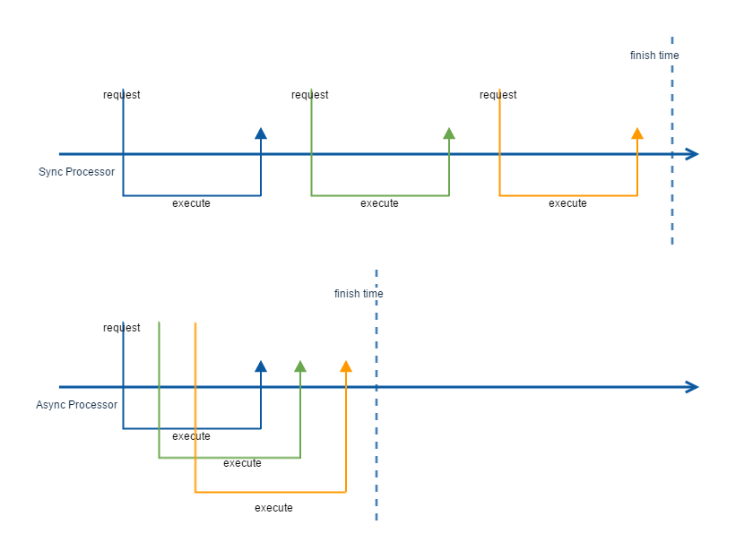原子操作 意味着 事务会话 在多步骤执行中，会记录已分配资源和原始状态，当所有步骤都执行成功时，提交变更，完成处理；当中间步骤出现异常时，释放已分配资源，并将状态回滚到执行前的初始状态，以便后续请求能够更干净地处理，如下图所示：
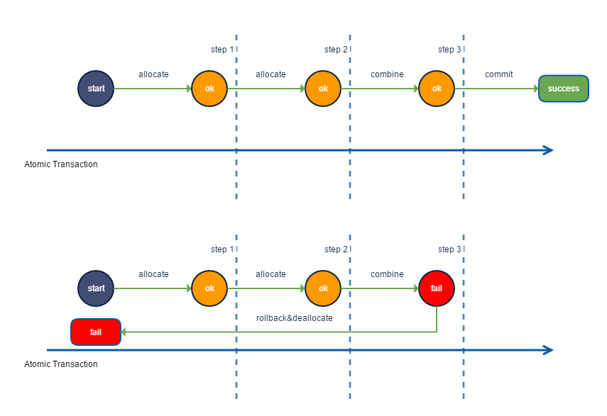无锁设计¶
主流开源IaaS平台一般采用一致性哈希算法，将不同业务请求分摊到不同的承载节点处理，但是承载节点内依然存在资源竞争和锁抢占的问题，并不能彻底解决并发处理的性能问题。
传统系统中，通常使用线程池技术，由多个线程对收到的消息或者业务请求进行处理，但是在大量并发请求的场景下，难免会有关联同一个会话对象的多个消息被分配到不同的工作线程处理，导致资源竞争，最终只能引入锁保护机制，阻塞处理，不仅增加业务处理复杂度，还导致多工作线程同时阻塞，变为低效率的串行执行，降低整体处理性能。
致云云管理平台设计了 事务编排 机制，将请求消息根据资源占用情况，重新编排，确保同一会话对象关联的消息，均在一个工作线程内处理。 事务编排 机制的引入，带来了以下好处：
- 多工作线程之间，不再因为共享资源竞争，相互阻塞等待，提高整体并发处理能力。
- 同一会话的消息之间，不再需要互斥锁保护资源竞争，减小资源消耗，提高处理性能
- 同一会话的消息保证串行处理，简化状态机逻辑和保护控制
非编排与编排系统的处理差异对比如下：
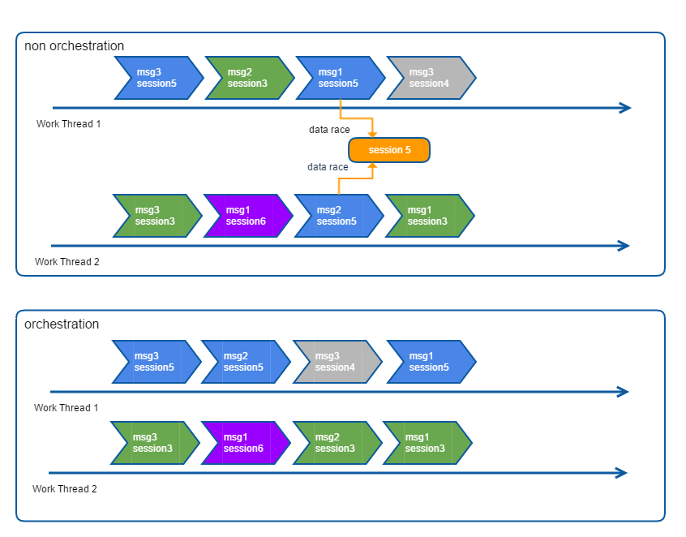除了事务编排机制，致云云管理平台内部代码中，基于CAS机制开发了多种无锁队列和分配算法，所有数据在性能最高的CPU L1/L2 Cache中交换处理，即使在普通x86服务器上，每秒也能够处理和交换数百万条数据，最大程度地发挥了服务器性能。
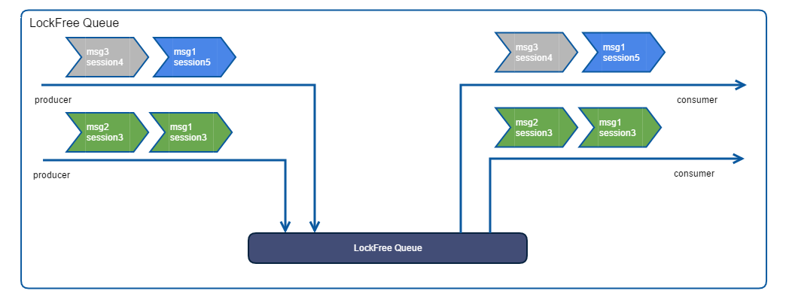专用报文¶
主流开源IaaS平台的消息通常采用开源消息队列方案，使用json/xml等文本格式在模块之间传递和交互，报文尺寸大，处理速度慢，时延高。当业务压力较大时，还会因为过多的反复拆包和重传，影响云服务业务本身的稳定性。
致云云管理平台消息报文专为云计算的业务场景而设计，相比开源的通用方案，有以下特点：
- 高效率的二进制压缩编码，报文尺寸只有文本消息的几分之一甚至几十分之一，极大地减少了消息报文尺寸，降低带宽浪费
- 能够基于数据流进行快速序列化和反序列化，无需获取全部报文才进行处理，提升并行处理效率。
- 二进制编码最接近计算机处理格式，转换成本最低，序列化与反序列化处理速度是开源方案的数倍以上。
- 采用致云专用的可靠UDP协议在模块组件之间直接传递，传输时延极低，有效提高系统响应速度。
C++开发¶
主流开源IaaS平台通常采用Python/Java等语言开发，这类语言学习简单，开发效率高，但是通常基于后台虚拟机环境运行，资源占用大，无法充分发挥服务器性能，定期的垃圾回收机制还会对系统平稳运行产生额外的冲击。
致云科技核心技术团队，十余年来积累了丰富的国家级电信、安防平台设计和开发经验，并将这些经验和积累运用到云计算领域。致云云管理平台核心模块全部使用C++开发，架构成熟，代码精炼；全平台核心组件代码不超过十万行，能够在极低的资源占用情况下，发挥远远超过其他平台的性能。
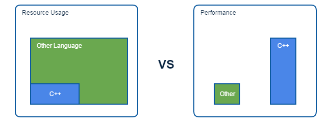免数据库设计¶
主流开源IaaS平台通常利用数据库机制在前后端同步系统状态，后台采集系统状态写入数据库，前端进行读取。但是这种机制常常会因为后端延迟或者故障，导致前端读取状态与后台实际运行情况不一致，产生逻辑错误和决策失误。
此外，数据库系统速度慢，处理复杂，本身也是一个系统故障点，必须额外考虑高可用、数据保障和安全防护方案。依赖数据库系统的设计，在系统中引入了更多的不稳定因素，降低了系统可靠性，增加了维护和排查难度，也客户增加了非常大的采购和运维成本。
致云云管理平台的核心系统中，使用了免数据库设计，所有状态通过消息实时更新，在内存中直接处理，不仅降低了处理时延，还确保系统中状态一致，能够做出更精准的判断和处理。对于必须持久化存储的关键数据，在平台多节点间分布式存储，后台持续校验和同步，无需人工干预和维护。
免数据库设计能够确保全系统能够持续高效、稳定地提供云服务，而不用担心数据库系统产生的种种负面影响，保障了系统的高可用性。
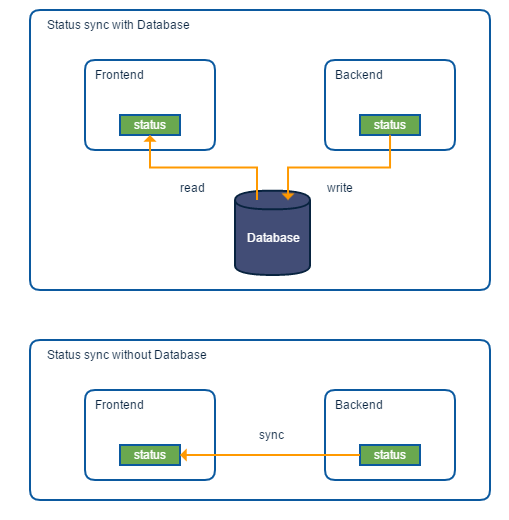灵活¶
1+N到公有云¶
致云云管理平台是为了提供高效、简洁的云计算服务而设计的纯软件IaaS平台，平台各组件均为纯软件模块，可以在任意x86服务器上灵活安装。既能将多组件集中部署到一台服务器，作为All In One节点提供完整的云计算服务，同样也可以使用分布式多集群的超大规模部署模式，满足多地多中心的公有云运营需要。
平台的 Scale out 架构可以在保障客户在不停机、不中断服务的情况下，平滑扩容系统容量或者扩展系统功能特性，而且理论上没有系统规模上限。
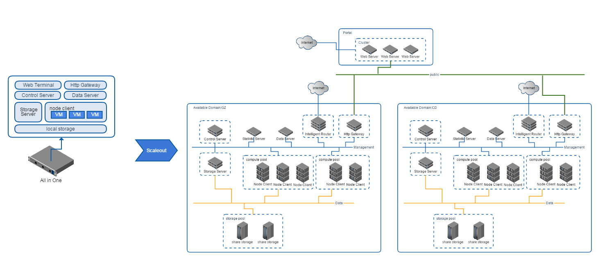自动组网¶
分布式系统部署的难点是一，是在各种复杂而且经常变化的网络环境下，能够快速部署组件并提供服务。
主流开源IaaS平台部署实施时，不仅需要在服务器和组件上配置复杂的网络信息和关联关系，还需要在平台内严格地填写完整的物理设备网络信息，然后才能进行管理。一旦某个步骤或者环节的配置信息有误，整个组件就无法正常工作。而且当服务器迁移或者网络地址变化时，所有相关信息必须重新人工配置，整个流程复杂、繁琐，而且极易出错，必须拥有非常强大的专家团队才能顺利实施。
致云云管理平台中，当需要向云平台新增服务器节点时，无需任何人工配置和干预，只需要保持物理网络连接正常并启动服务器，服务器内的平台组件会自动进行网络发现，然后加入平台工作域，自动完成关联组件连接，直接进入可服务状态。
当服务器迁移或者网络地址变更时，同样无需人工调整，直接加电可用，平台会自动更新组件网络信息及关联关系，迅速恢复可服务状态。
自动组网技术，极大地简化了平台部署步骤，降低了维护难度和成本，便于客户采用致云云管理平台，快速部署并提供云计算服务。
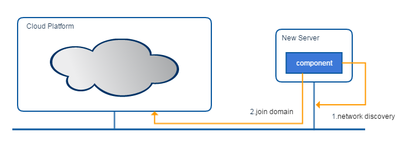多模式选择¶
致云云管理平台允许用户在系统内创建多个计算资源池，计算资源池除了可以简化操作，隔离物理资源，还支持对不同的资源池设置不同的功能选项，以便在同一套系统内支持各种不同的工作模式。
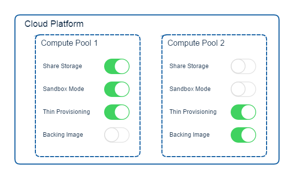业务属性分离¶
除了设置不同的功能选项，致云云管理平台的计算资源池也能够各自关联不同的业务资源，来实现业务属性的分离，以便在同一套系统内为不同用户提供各层级服务。
比如可以将VIP用户计算资源池关联到SSD磁盘存储池，而将普通用户的计算资源池关联到SATA磁盘存储池，则VIP用户申请的云主机均会分配到SSD磁盘上，获得更高的IOPS及数据吞吐能力，而普通用户申请的云主机则会分配到性价比更高的SATA磁盘上，如下图所示：
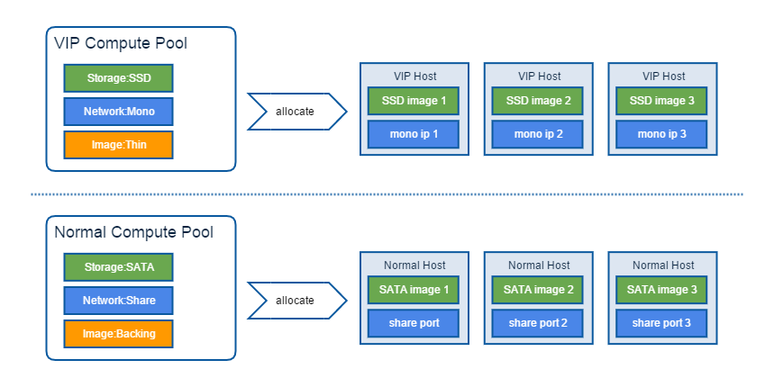健壮¶
动态负载均衡¶
主流开源IaaS平台选择承载计算节点创建云主机时，通常只依赖数据库中保存的静态负载进行估算，而且经常由于采集机制或者数据同步机制的问题，无法了解后端节点的实际资源利用状况，只能采用简单的轮询或者随机策略进行分配，无法真正做到均衡负载。从而导致某些节点负载过大，影响云服务质量和系统稳定性，增加节点损坏几率。
致云云管理平台中，各资源节点持续向主控节点更新本节点的实时资源负载，主控节点在内存中维护资源池内的各节点负载情况。当资源池收到创建云主机请求时，会综合考量内存中最新的CPU利用率、可用内存、可用磁盘、已分配资源等多个指标，并对不同指标使用不同的权重进行加权计算，最终选择综合负载最低的计算节点进行处理。
动态负载均衡算法避免了数据更新不及时和分配算法过于简单导致的系统负载不均，能够有效地将负载压力更加均衡地分布在整个系统中，既保障了用户的云服务质量，也延长了节点寿命，提升了系统稳定性。
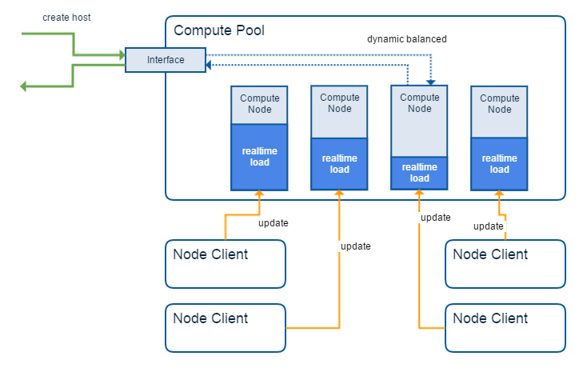多路径集群¶
多网络路径接入是高可用云计算平台必备特性之一，它能够确保当单个接入路径节点故障时，用户依然能够通过其他路径访问平台提供的云服务。
主流开源IaaS平台必须依靠人工对多路径规则进行设置，同时依赖数据库在多个路径节点之间同步访问规则。
致云云管理平台由智能路由节点(Intelligent Router)提供外部网络访问和多路径接入，每个智能路由都拥有完整的全系统内云主机访问规则，用户通过任一一个智能路由节点均能够访问到目的云主机。主控节点(Control Server)新建云主机或者修改云主机网络接入信息时，会自动将最新变更发送给所有智能路由节点执行，智能路由节点还会自动定期通过消息与主控节点同步最新规则，确保随时保证云主机的可访问性。
当云平台访问量增大，需要增加并发接入能力时，只需要新增智能路由节点，新节点启动后会立刻自动从主控节点获取并更新为最新的云主机访问规则，后续请求就可以发送到新节点访问云主机，支撑更多的并发访问请求，全过程无需人工干预或者配置，完全由系统自动控制，不经过数据库，通过消息实现快速更新。
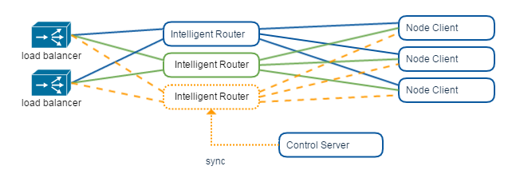控制执行分离¶
基于网络的分布式系统运行时，随时可能因为网络、电源、内存等各种故障原因，导致通讯中断、组件运行异常甚至人工重启。
为了在极端情况下也能保障客户云服务的稳定运行，致云云管理平台将系统划分为执行层和控制层，执行层包含云主机实例、镜像文件、网络接入规则等保证云服务访问的执行组件；控制层则是根据用户或者平台内部请求修改、调度执行层组件的平台组件。
执行层数据均保存在持久化存储中，与控制层组件解耦分离，互不影响，即使控制层所有组件故障或者崩溃，都不会影响客户已有云服务的访问。控制与执行的分离设计，也可以实现在不中断客户云服务的情况下，平滑进行组件升级与替换。
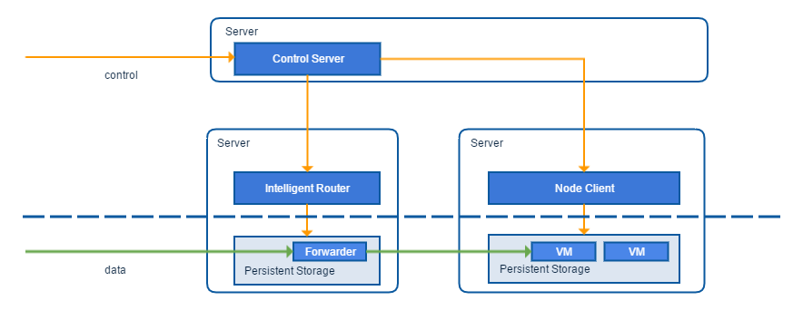自动数据修复¶
致云云管理平台在核心组件中使用了免数据库设计，对于关键数据在多节点之间中采用数据副本保存。为了避免数据损坏或者异常，干扰组件正常工作，平台内置了自动数据修复策略。
本地节点与远端节点定期进行数据校验，一旦发现本地数据损毁或者不一致，从远端节点重新获取并修复本地数据。
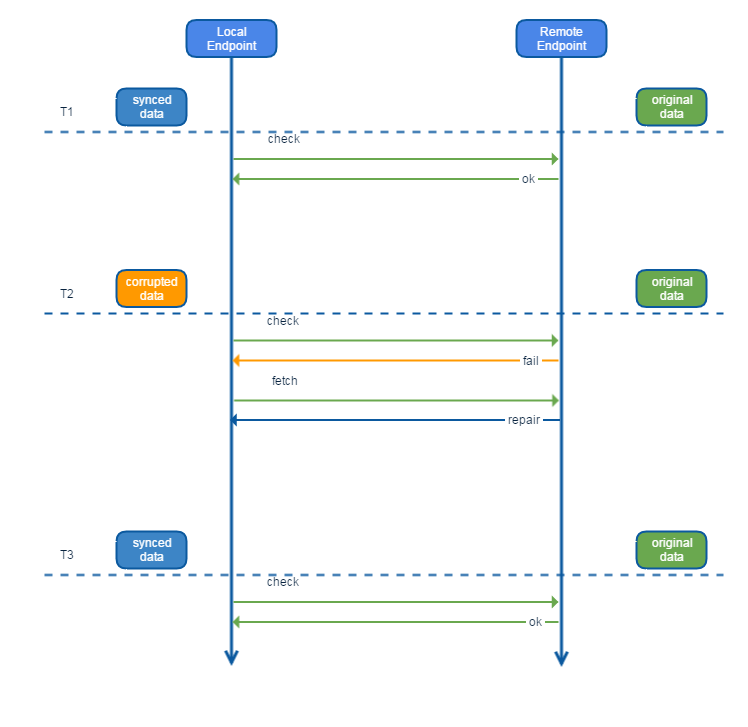智能FT¶
保障云服务的持续工作，是云管理平台的基本职责之一。主流开源IaaS平台通常使用冗余备份或者负载均衡方案，为一个服务创建两个或者多个云主机实例，在前端配置心跳检测，当特定云主机故障时，将后续请求分发到其他备份云主机实例。这种方案需要创建额外的冗余实例，增加成本，并且只能依靠人工进行预先设置，无法灵活应对多变的实际情况。
致云云管理平台的智能Fault tolarence特性，无需创建冗余实例或者进行人工设置，只要用户云主机运行在开启高可用模式的计算资源池中，当承载宿主机故障时，主控节点会在检测到故障的第一时间内，在池内重新为受影响的云主机选择新的承载节点，重新创建实例，并修改前端的网络规则，将访问请求重新路由到新主机实例。整个过程，无需预设，可以在数秒内自动完成，用户几乎不会察觉到服务切换。即使出现连续故障的极端情况时，系统也能不断切换到新承载节点，确保用户服务持续工作。
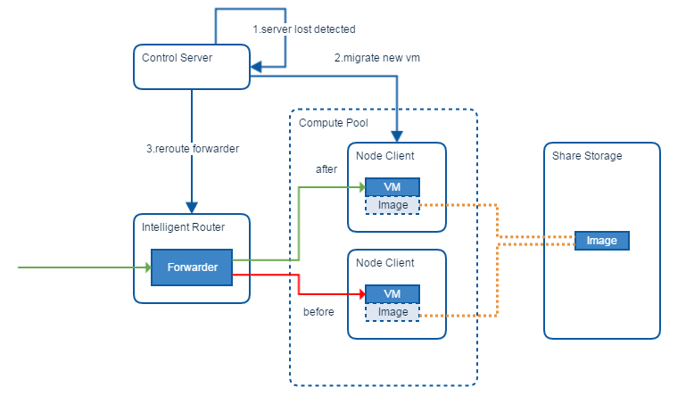安全¶
沙盒¶
云主机运行在云管理平台内部网络中，一旦某个云主机感染木马、病毒，或者被恶意用户控制，则攻击者可以利用感染云主机作为跳板，攻击其他云主机，甚至云管理平台本身，对系统安全和稳定性形成极大威胁。
致云云管理平台的沙盒模式专为应对此种威胁所设计，沙盒模式下，所有云主机均运行在自己独有的沙盒网络中，该网络中只能看到自己的云主机实例，看不到其他云主机或者平台服务器，也无法进行任何攻击或者探测。沙盒云主机对外的所有访问请求均由平台管理、控制和转换，对云主机完全透明。当某台云主机被感染后，安全威胁无法跨越沙盒网络，实现灾害控制，管理员还能随时隔离该云主机的网络连接，彻底保证其他云主机和整个平台的系统安全。
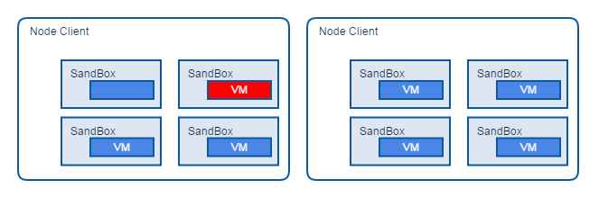数字签名¶
致云云管理平台提供 Restful API 接口，对Web管理端或者第三方应用开放管理平台的控制和调度能力。
接口调用必须通过Http方式与 Http Gateway 组件进行交互，为了保障平台的系统安全， Http Gateway 使用身份校验和数字签名双重机制来验证请求合法性。
接口的使用大致流程如下：
- App向GW提交身份验证信息，校验通过后，GW分配临时会话ID与通讯令牌
- App保存会话ID及通讯令牌
- App尝试发送请求，将请求内容与通讯令牌进行签名计算，生成数字签名
- App请求同时携带请求内容与数字签名，发送给GW
- GW收到请求后，检查会话ID与数字签名，确认用户合法，数据无篡改后，执行请求指令
- 重复第3步，继续发送请求
`` Restful API 详细使用说明请另行获取文档 ``
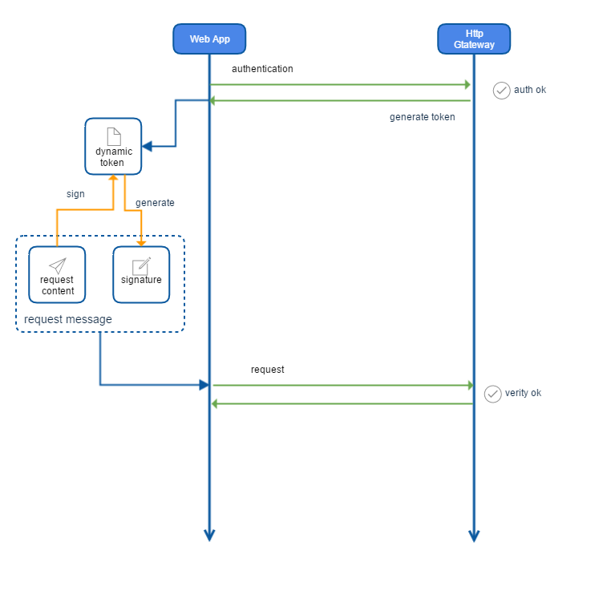私有协议¶
除开云主机自身的业务数据，云平台内传输的网络报文主要有两类，控制信令以及镜像文件传输产生的数据报文，保障这两类网络报文的安全传输，对平台安全和稳定性至关重要。
主流开源IaaS平台通常使用开源消息队列配合json/xml等文本格式进行控制信令传输，报文尺寸大，传输效率低，而且非常容易被破解或者篡改；而镜像传输通常使用FTP或者Http传输，速度慢，而且部署复杂，容易出现安全漏洞。
致云云管理平台针对这两类网络报文，分别开发了两个私有协议：
Transporter
Transporter协议 是基于UDP的可靠传输协议，使用私有的安全校验和编码算法，能够高效可靠地在组件之间传输二进制控制报文，低时延，结构紧凑，难以破解和篡改，专为控制信令传输设计。
Whisper
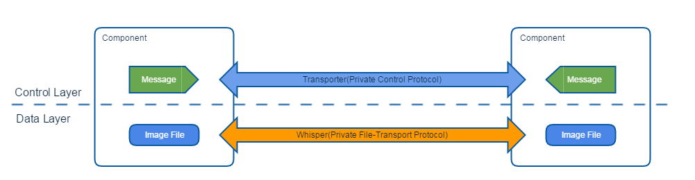Whisper协议 则是针对镜像文件等大文件传输场景设计，能够基于UDP快速传输大量文件块数据，免部署的超轻量级传输协议，能够最大程度利用物理网络带宽，完成镜像文件传输。
平台隔绝¶
致云云管理平台提供了 隔绝模式 部署方案，隔绝模式下，外网用户仅能通过平台自动建立的严格受控通道与目标云主机通讯，所有平台服务器无法访问外部网络，也无法被外部网络访问。整个云管理平台的节点服务器均与外部网络隔绝，彻底杜绝外部攻击，也杜绝内部恶意进程向外泄露关键数据的可能。
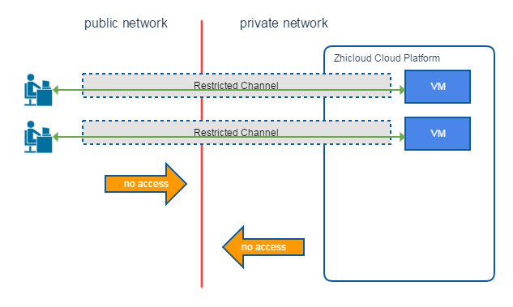自研组件¶
致云科技的云计算公共代码框架 framework ，使用纯C++代码实现了序列化、消息队列、安全校验、事务、文件传输、日志、状态监测等基础组件功能，所有组件均自主研发，代码精简，安全可靠，完全可控，最大程度减少云管理平台对于外部组件的依赖，也避免了引入开源代码产生的各种安全漏洞和稳定性隐患。
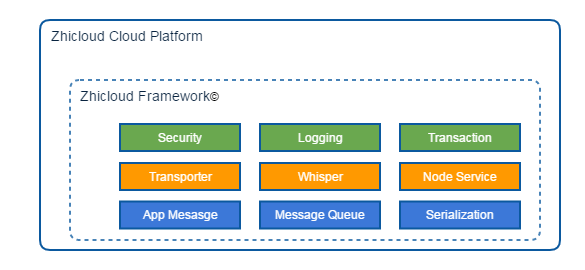